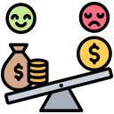

TOO MUCH USELESS TASKS
650 propositions of simplification only in 2025, too much time spend into meetings and management

WIDE DISPARITIES IN MAYORS SALARIES
The mayor of a municipality with fewer than 500 residents receives a maximum gross allowance of just €1,048.18 per month, compared to €5,960.26 for the mayor of a municipality with more than 100,000 residents
WOMENS AND YOUNG PEOPLE UNDERREPRESENTED
Women's represent only 20% of mayors and 17% of municipal councillors, while young people under 30 represent only 1.5% of mayors and 4.5% of municipal councillors